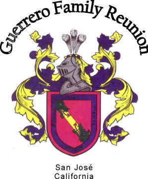

WHERE: Del Valle Regional Park (Livermore, CA)
WHEN: Friday, July 11 & Saturday July 12, 2014
WHY: Family, Fun and Food
Potluck : Saturday, July 12, 2014 at 4:00 PM
RECOMMENDED CAMP SITES ARE NUMBERS 14-52
To make reservations please call (510) 562-2267 from 8:00
a.m. - 4:00 p.m. or you may make reservations on-line at
www.ebparks.org/parks/del_valle ; payment by Master Cart or VISA. It is
crucial that we make our reservations as early as possible.
Shortly after, you will receive your tickets in the mail. If you would
like to view a map of the park, you can go to the website:
www.ebparks.org/parks/del_valle and
click on Park Activities
, underù Camping
. , Book a Del Valle Regional Park campsite now
.
Finally, you can click Del Valle campground map
ù,
- R.V. Sites with hook-up (water, sewage and electricity) $45.00/night.
- Regular campsites (for tents) $22.00/ nigth.
- $8.00 for reservation service fee per site.
- $6.00 per night for an additional vehicle per site (2 car maximum per site, no parking off pavement)
- Remember, camp area gates open at 6:00 a.m. and close at 10:00 p.m.
Those of you who are traveling far from the Bay Area and are not planning to go camping with us, but would like to come for the day to the potluck, you could reserve a hotel room in Livermore, CA (15 minutes away from the park).
We will have a photo slideshow, If you have photos of our ancestors, please bring them or send them to us by e-mail to share these special memories. If everybody gets involved and helps out with the different activities, we can make it a memorable event. After all, this is for our future generation of children to enjoy and get to know their family roots.
We need help in organizing and planning festivities so feel free to call Graciela Guerrero Delgado at (408) 219-2354 or graciela_delgado@comcast.net, or Lourdes Guerrero Rey at (408) 205-1020 or lourdes@ozieelectric.com, or Sandra Scott Thornton at (925) 648-0234 or sumfuun@aol.com, with suggestions. We will be graciously accepting donations for raffle items, as well as, supplies for the potluck such as plates, cups, napkins and plastic cutlery.
P.S.
If you would like a copy of the most recent family tree, please e-mail Pancho Guerrero at franqueq@sbcglobal.net.
WE LOOK FORWARD TO SEEING YOU THERE!
La 32a Reunión Anual de la Familia Guerrero
DONDE: Parque Regional Del Valle (Livermore, CA)
CUANDO: Viernes 11 Y S√°bado 12 de Julio, 2014
PARA QUE:
Para disfrutar en familia con
diversión y Comida al Estilo Potluck El Sábado, 12 de
Julio, 2014 a las 4:00 PM
LOS ESPACIOS DE CAMPAMENTO RECOMENDABLES SON; DESDE EL 14 HASTA EL 52
COMO:
Las reservaciones deben hacerce llamando al teléfono
(510) 562-2267, de 8:00 am – 4:00 pm, o se pude hacer reservacion por internet
www.ebparks.org/parks/del_valley pagar con tarjeta de crédito VISA o Master
Card. Es importante que se agan las reservaciones lo mas pronto possible. Posteriormente, a vuelta de correo recibir√°n sus boletos de
acampar. Si desea mirar un mapa del parque puede ir al sitio Web:
www.ebparks.org/parks/del_valle
y hacer click en Park Acitivities
bajo
Camping
. Finalmente, otro click en Camping
ù,y hacer click Book a Del Valle Regional Park Campsite now
. Finalmente, hacer click en Del Valle campground map
.ù
- Para vehículos recreativos (agua, drenaje, y electricidad). $45.00/ noche.
- Campamentos regulares (para casa de campaña) $22.00/ noche.
- $8.00 adicionales por servicio de reservación por espacio.
- $6.00 la noche por vehículo adicional en cada espacio (2 autos máximos por espacio)
- Recuerde que las puertas abren a las 6:00 a.m. y cierran a las 10:00 p.m.
Para aquellos que vendrán fuera del área de la bahía de San Francisco y no desean acampar, pero si desean acompañarnos durante el día, pueden reservar hoteles en Livermore, CA (está a 15 minutos del parque).
Tendremos una presentación en pantalla con fotos e historias de la familia de los años anteriores de la reunión familiar. Si usted tiene fotos de nuestros antepasados, tráigalas o envíelas por email para compartir memorias. Recuerde éste evento se celebra una vez por año, si todos juntos participamos lo celebramos en grande. Todo depende de nuestra participación en diferentes actividades. Después de todo, será un recuerdo para nuestros hijos y futuras generaciones que sepan de donde vienen.
Necesitamos todo tipo de ayuda para organizar y planear éste evento. Favor de comunicarse con Graciela Guerrero Delgado al (408) 219-2354 o graciela_delgado@comcast.net, o con Lourdes Guerrero Rey al (408)205-1020 o lourdes@ozieelectric.com, o con Sandra Scott Thornton al (925) 648-0234 o sumfuun@aol.com, Necesitamos sugerencias y apoyo de todos. Agradeceríamos donaciones de artículos para la rifa, y provisiones para el potluck: platos, servilletas, vasos y cubiertos de plástico.
P.D. No se le olvide visitar la p√°gina Web familiaguerrerodelsurdezacatecas.com.
Para los que desean una copia del árbol genealógico, favor de mandar un correo electrónico a Pancho Guerrero franqueq@sbcglobal.net.
ESPERAMOS VERNOS ALLA!